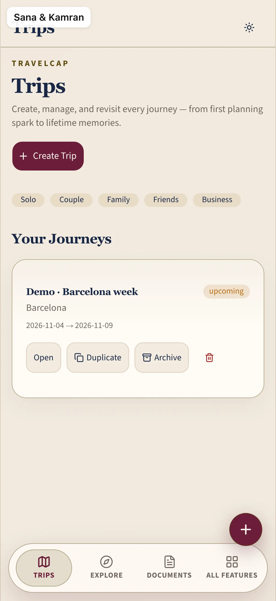

Illustrative story Illustrative story. People and data are fictional.
TravelCap · Karachi → Istanbul
How Sana kept the honeymoon docs in one trip
Phone for boarding passes, iPad for the itinerary on the sofa, laptop for documents before departure.
“One trip. No WhatsApp archaeology.”

Before and after
Illustrative numbers from a fictional week.
Before
After TravelCap
A day with Sana
-
Trip home
Sana opens the honeymoon trip on her phone — tickets, hotel, the shape of Istanbul — without diving into WhatsApp archaeology.
-
Flights
Flight details on the phone are readable at the gate; Kamran can glance without hunting a forwarded PDF.
-
iPad itinerary
Sofa iPad itinerary for the day plan; they argue about museums, not about which chat has the booking.
-
Docs laptop
Laptop document list before departure — passports, visas, confirmations — one trip, one checklist.
-
Budget
Budget on the laptop is illustrative; they set a calm ceiling and close the lid excited, not panicked.
Watch it
A day across devices — silent walkthrough with captions. No autoplay with sound.
Read transcript
Sana runs the honeymoon trip across phone, iPad, laptop. Fictional.
Features Sana uses
Illustrative story. People and data are fictional.